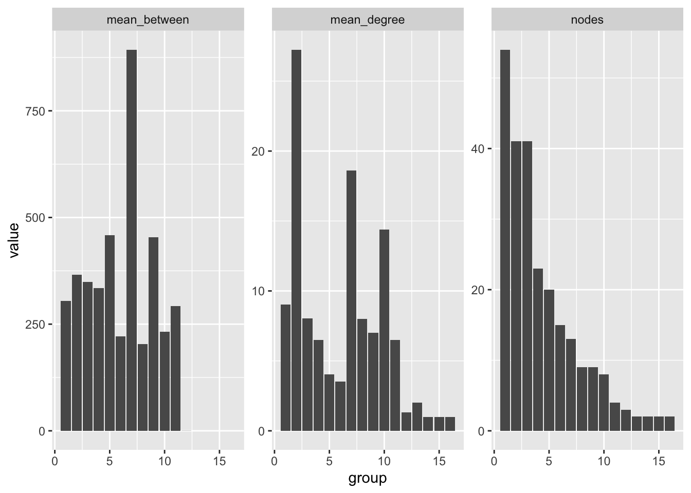

Week 4, Class 2: Network Analysis with R
Introduction
In this class, we’ll talk through creating and analysing a network object in R. The network we’ll work with is a sample of correspondence data taken from the British State Papers in the seventeenth century.
Network data structures
Network data comes in a number of forms. Two common ones are adjacency matrices and edge lists. An adjacency matrix is a matrix of rows and columns, one for each node. If there is a link between two nodes, a 1 is put in at that point. If it is a weighted network, the weight can be entered in the correct space. In some cases, your data may be in a format where it is easy to use it as an adjacency matrix.
Adjacency matrices can be easily read into R using igraph and graph_from_adjacency_matrix().
The other common type is what we will work with in this lesson: an edge list. An edge list is actually also a ‘sparse matrix’.
Creating a Network Object in R from an Edge List
One of the easiest data formats to construct a network is an edge list: a simple dataframe with two columns, representing the connections between two nodes, one per row. If the network is directed, generally the ‘Source’ node is on the left side, and the ‘Target’ node on the right. It makes particular sense with correspondence data, which is often stored as records of letters with a ‘from’ and a ‘to’—more or less a ready-made edge list. In a correspondence dataset you might also have multiple sets of each of the edges (multiple letters between the same pair of individuals). This will be added to the edges as a ‘weight’.
We will use three R network libraries to do almost everything network-related, from analysis to visualisation: igraph, tidygraph and ggraph. The goal is to port everything to a format which is easy to work with using existing an established data analysis workflow. That format is known as ‘tidy data’, and it is a way of working with data which is easily transferable across a range of uses. It also means you need to learn very little new programming to do network analysis if you stay within this ‘ecosystem’.
Import Network Data
The workflow uses a number of R packages. In the CSC Notebooks environment, these have already been installed and can be loaded using the commands below. If you are doing this on a local machine, you may have to install them first using the command install.packages(), with the package name specified as a string, for example install.packages('igraph').
library(tidyverse)
library(igraph)
library(tidygraph)In this class, we’ll use a dataset derived from the English State Papers during the Stuart era (1603-1714). It takes the form of a .csv containing the information on the author, recipient, and date of sending for a small sample of state letters received between 1670 and 1672.
Read the file into R with the read_csv() function from a previous lesson:
letters = read_csv("letter_data.csv", col_types = cols(.default = "c"))
letters## # A tibble: 1,374 × 6
## letter_id from_id from_name to_id to_name date
## <chr> <chr> <chr> <chr> <chr> <chr>
## 1 1 E006019-S012734-T000000 Dr. Ralph Cudworth, Ma… E022… Willia… 1670…
## 2 2 E006019-S012734-T000000 Dr. Ralph Cudworth, Ma… E022… Willia… 1670…
## 3 3 E011771-S014372-T000000 Hyde, Edward E015… Sir Ed… 1670…
## 4 4 E015103-S043299-T000000 Sir Philip Musgrave E022… Willia… 1670…
## 5 5 E020134-S040615-T000000 Taylor, Silas E022… Willia… 1670…
## 6 6 E014743-S041280-T000000 Sir Edward Misselden E022… Willia… 1670…
## 7 7 E015103-S043299-T000000 Sir Philip Musgrave E022… Willia… 1670…
## 8 8 E020485-S043979-T000000 Sir Thomas Allin E022… Willia… 1670…
## 9 9 E020485-S043979-T000000 Sir Thomas Allin E022… Willia… 1670…
## 10 10 E004654-S006979-T000000 Charles II, King of En… E012… James … 1670…
## # … with 1,364 more rowsThe letters dataset is a simple dataframe. Each row represents a letter record, and has a unique ID. Essentially, each row is a record of who the author and recipient of the letter. Each of these senders and recipients also have both a unique ID, and the original name of the letter writer and sender. The unique ID is used because it’s quite likely that the names are not unique, and the network could combine two nodes with the same name together, for example.
Make an edge list
This is used to construct an edge list. If you have multiple letters between individuals, you can count them and use as a weight in the network, or you can ignore it. This is done with tidyverse commands we learned previously: group_by() and tally(), changing the name of the new column to ‘weight’.
edge_list = letters %>%
group_by(from_id, to_id) %>%
tally(name = 'weight')
edge_list## # A tibble: 364 × 3
## # Groups: from_id [198]
## from_id to_id weight
## <chr> <chr> <int>
## 1 E000145-S012650-T000000 E022443-S042999-T000000 1
## 2 E000189-S014115-T000000 E004830-S019312-T000000 4
## 3 E000189-S014115-T000000 E006871-S022202-T000000 1
## 4 E000189-S014115-T000000 E022443-S042999-T000000 1
## 5 E000312-S012741-T000000 E022443-S042999-T000000 2
## 6 E000393-S036175-T000000 E001993-S018912-T000000 1
## 7 E000520-S001769-T000000 E003476-S051213-T000000 1
## 8 E000520-S001769-T000000 E022443-S042999-T000000 1
## 9 E000799-S042396-T000000 E022443-S042999-T000000 1
## 10 E001346-S047404-T000000 E022443-S042999-T000000 1
## # … with 354 more rowsNow you see each unique combination of sender and recipient. If there are multiple letters, this is now signified by a weight of more than one in the weight column. You’ll also notice that the other information (letter IDs and actual names) has disappeared. This is not needed to make the network, but we can bring the name information back later.
Turn the edge list into a tbl_graph
Next transform the edge list into a network object called a tbl_graph, using tidygraph. A tbl_graph is a graph object which can be manipulated using tidyverse grammar. This means you can create a network and then use a range of standard data analysis functions on it as needed.
Use as_tbl_graph() to turn the edge list into a network. The first two columns will be taken as the from and to data, and any additional columns added as attributes. An important option is the directed = argument. This will specify whether the network is directed (the path goes from the first column to the second) or undirected. Because this network is inherently directed (a letter is sent from one person to another), we use directed = TRUE. In many cases, the network will be undirected, and this should be specified using directed = FALSE.
sample_tbl_graph = edge_list %>%
as_tbl_graph(directed = T)
sample_tbl_graph## # A tbl_graph: 248 nodes and 364 edges
## #
## # A directed simple graph with 6 components
## #
## # Node Data: 248 × 1 (active)
## name
## <chr>
## 1 E000145-S012650-T000000
## 2 E000189-S014115-T000000
## 3 E000312-S012741-T000000
## 4 E000393-S036175-T000000
## 5 E000520-S001769-T000000
## 6 E000799-S042396-T000000
## # … with 242 more rows
## #
## # Edge Data: 364 × 3
## from to weight
## <int> <int> <int>
## 1 1 89 1
## 2 2 22 4
## 3 2 199 1
## # … with 361 more rowsThe tbl_graph is an object containing two linked dataframes, one for the edges and one for the nodes. The node table is currently a table containing a row for each unique node in the dataframe, with one column, name, which is that node’s ID. When we calculate additional node-level metrics, they will be added as additional columns to this node table.
The edges dataframe currently contains three columns: from, to, and weight. The from and to columns contain the edge information: the first row tells us that there is an edge running from node 1 to node 89. These node numbers are not the node IDs but rather correspond to the order of the node table (or the numbers just to the left of the name column). So this tells us that there is an edge going from the node in position 1 (E00145-S012650-T000000) to that in position 89.
You can access each of the tables using the function activate(nodes) or activate(edges). The active table is listed first and has the word ‘active’ in the description. Any commands you do (filtering, joining and so forth) will happen on the active table.
sample_tbl_graph %>%
activate(edges)## # A tbl_graph: 248 nodes and 364 edges
## #
## # A directed simple graph with 6 components
## #
## # Edge Data: 364 × 3 (active)
## from to weight
## <int> <int> <int>
## 1 1 89 1
## 2 2 22 4
## 3 2 199 1
## 4 2 89 1
## 5 3 89 2
## 6 4 10 1
## # … with 358 more rows
## #
## # Node Data: 248 × 1
## name
## <chr>
## 1 E000145-S012650-T000000
## 2 E000189-S014115-T000000
## 3 E000312-S012741-T000000
## # … with 245 more rowsYou can use many of the tidyverse commands we learned in the earlier lesson on this object, for example filtering to include only edges with a weight of more than 1:
sample_tbl_graph %>%
activate(edges) %>%
filter(weight>1)## # A tbl_graph: 248 nodes and 165 edges
## #
## # A directed simple graph with 121 components
## #
## # Edge Data: 165 × 3 (active)
## from to weight
## <int> <int> <int>
## 1 2 22 4
## 2 3 89 2
## 3 9 74 2
## 4 10 89 6
## 5 12 154 2
## 6 13 202 2
## # … with 159 more rows
## #
## # Node Data: 248 × 1
## name
## <chr>
## 1 E000145-S012650-T000000
## 2 E000189-S014115-T000000
## 3 E000312-S012741-T000000
## # … with 245 more rowsCalculating Network Metrics
Global metrics
The first thing we want to do with this network is to calculate some global network statistics. Because the outputs to these are generally a single number, we don’t need to worry about storing them in a table, as we’ll do with the node-level metrics later. To calculate these metrics, generally just pass the network to a relevant function. These metrics were covered in more detail in the previous class.
Density
(the number of links present out of all possible links):
sample_tbl_graph %>% igraph::graph.density()## [1] 0.005942275Average path length
(the average number of hops between every pair of nodes in the network):
sample_tbl_graph %>% igraph::average.path.length()## [1] 11.04997Clustering coefficient:
Because there are a number of ways to calculate clustering in a network, a method needs to be specified. The clustering coefficient is also known as transitivity, and it is defined as the ratio of completed triangles and connected triples in the graph. This measurement can be global (which counts the overall ratio) or local (which counts the individual ratio for each node). Because we want the global measurement, specific this with the type = argument.
sample_tbl_graph %>% igraph::transitivity(type = 'global')## [1] 0.02453653Node-level metrics.
There are a number of ways to calculate node-level metrics (these are things like degree, betweenness as explained in the previous class). For example, you can use igraph functions to calculate the degree of single node or group of nodes. The following code returns the degree for the node with the ID E004654-S006979-T000000 (King Charles II of England). You can return to the original dataset to find the relevant IDs for a node of interest. The argument mode = specifies the type of degree: in, out, or all, as we learned in the previous lesson.
sample_tbl_graph %>% igraph::degree(v = 'E004654-S006979-T000000', mode = 'all') ## E004654-S006979-T000000
## 52You can also look up the degree of multiple IDs by passing them as a vector, using c().
`
sample_tbl_graph %>% igraph::degree(v = c('E004654-S006979-T000000','E006019-S012734-T000000'), mode = 'all') ## E004654-S006979-T000000 E006019-S012734-T000000
## 52 1Adding node-level metrics as a column with tidygraph.
Remember that our tidygraph object is made up of two dataframes, one of nodes and one of edges? We can use the format to add node-level metrics to the node dataframe as additional columns, making them easy to analyse using R later. To do this, we use a function called mutate(). Mutate creates a new column containing the value from some calculation, which is performed on each row in the dataset.
Assign the name degree to the new column with degree =. The column should contain the total degree score for each node. This is done using the function centrality_degree(). With the two additional arguments in this function, specify the mode (in, out, or all) and, if a weighted degree score is desired, the column to be used as weights.
sample_tbl_graph %>%
activate(nodes) %>% # make sure the nodes table is active
mutate(degree = centrality_degree(mode = 'all', weights = weight))## # A tbl_graph: 248 nodes and 364 edges
## #
## # A directed simple graph with 6 components
## #
## # Node Data: 248 × 2 (active)
## name degree
## <chr> <dbl>
## 1 E000145-S012650-T000000 1
## 2 E000189-S014115-T000000 21
## 3 E000312-S012741-T000000 6
## 4 E000393-S036175-T000000 3
## 5 E000520-S001769-T000000 2
## 6 E000799-S042396-T000000 1
## # … with 242 more rows
## #
## # Edge Data: 364 × 3
## from to weight
## <int> <int> <int>
## 1 1 89 1
## 2 2 22 4
## 3 2 199 1
## # … with 361 more rowsThe data format allows you to use dplyr pipes %>% to perform one calculation on the data, then pass that new dataframe along to the next function. Here we calculate the degree scores first, then filter to include only nodes with a degree score over two:
sample_tbl_graph %>%
activate(nodes) %>%
mutate(degree = centrality_degree(mode = 'total')) %>%
filter(degree >2)## # A tbl_graph: 51 nodes and 124 edges
## #
## # A directed simple graph with 2 components
## #
## # Node Data: 51 × 2 (active)
## name degree
## <chr> <dbl>
## 1 E000189-S014115-T000000 8
## 2 E001993-S018912-T000000 37
## 3 E002622-S014197-T000000 10
## 4 E003476-S051213-T000000 6
## 5 E003494 3
## 6 E004454-S051301-T000000 3
## # … with 45 more rows
## #
## # Edge Data: 124 × 3
## from to weight
## <int> <int> <int>
## 1 1 8 4
## 2 1 29 1
## 3 2 7 1
## # … with 121 more rows.infobox {
padding: 1em 1em 1em 1em;
margin-bottom: 2px;
border: 2px solid orange;
border-radius: 10px;
background: #f5f5f5 5px center/3em no-repeat;
}Note that the calculations are done one at a time. What difference would it make to your results if you filtered (for example based on a set of dates) and then calculated degree, rather than the other way around?
Summarising the network data
To work with your new network metrics, the data can be outputted to a standard R dataframe. Create a new dataframe by doing this, using the tidyverse function for creating dataframes, as_tibble():
network_metrics_df = sample_tbl_graph %>%
activate(nodes) %>% # make sure correct table is active
mutate(degree = centrality_degree(weights = weight, mode = 'all')) %>% # calculate degree
mutate(between = centrality_betweenness(weights = weight,directed = F)) %>% # calculate betweenness centrality
as_tibble() # turn the nodes table into a plain dataframe## Warning in betweenness(graph = graph, v = V(graph), directed = directed, :
## 'nobigint' is deprecated since igraph 1.3 and will be removed in igraph 1.4This new table can be sorted, totals counted, and so forth:
network_metrics_df %>% arrange(desc(degree))## # A tibble: 248 × 3
## name degree between
## <chr> <dbl> <dbl>
## 1 E004830-S019312-T000000 604 8048.
## 2 E022443-S042999-T000000 270 13404.
## 3 E600059-S012260-T000000 161 3223.
## 4 E013473 150 235
## 5 E004654-S006979-T000000 91 11774.
## 6 E001993-S018912-T000000 72 6663.
## 7 E903376-S024822-T000000 57 1623
## 8 E008063 51 0
## 9 E002620-S051125-T000000 47 0
## 10 E906453-S026312-T000000 47 0
## # … with 238 more rowsJoining additional data
The value of working with a data model and tidygraph is that we can merge additional tables of data attributes to our nodes or edges. Earlier, we explained how important it is that every node in your data has a unique ID. The downside of this, particularly for humanities research, is that it’s not easy to see who or what is behind a particular node. This can be solved by using a join command.
In a separate table, we have a dataset of attributes about this set of nodes, including place and dates of birth and death, and gender. Using the join() commands, we can merge this table to the network data, and use it to sort, filter (and later visualise) the data:
First, load the table of data using read_csv:
node_attributes = read_csv('node_attributes.csv')## Rows: 248 Columns: 13
## ── Column specification ────────────────────────────────────────────────────────
## Delimiter: ","
## chr (11): name, main_name, all_names, links, gender, roles_titles, wikidata_...
## dbl (2): birth_year, death_year
##
## ℹ Use `spec()` to retrieve the full column specification for this data.
## ℹ Specify the column types or set `show_col_types = FALSE` to quiet this message.node_attributes## # A tibble: 248 × 13
## name main_…¹ all_n…² links birth…³ death…⁴ gender roles…⁵ wikid…⁶ occup…⁷
## <chr> <chr> <chr> <chr> <dbl> <dbl> <chr> <chr> <chr> <chr>
## 1 E006019… Dr. Ra… Dr. Ra… http… 1617 1688 male theolo… http:/… theolo…
## 2 E011771… Hyde, … Edward… http… 1609 1674 male judge;… http:/… judge;…
## 3 E015103… Sir Ph… Sir Ph… http… 1607 1678 male politi… http:/… politi…
## 4 E020134… Taylor… Silas … http… 1624 1678 male compos… http:/… compos…
## 5 E014743… Sir Ed… Sir Ed… http… 1608 1654 male econom… http:/… econom…
## 6 E020485… Sir Th… Sir Th… http… 1612 1685 male naval … http:/… naval …
## 7 E004654… Charle… Charle… http… 1630 1685 male sovere… http:/… sovere…
## 8 E007992… Heneag… Heneag… http… 1628 1689 male diplom… http:/… diplom…
## 9 E007902… John F… John F… http… 1625 1686 male priest http:/… priest
## 10 S035587 Philad… Philad… http… 1612 1665 female politi… http:/… politi…
## # … with 238 more rows, 3 more variables: place_of_birth <chr>,
## # place_of_death <chr>, politician <chr>, and abbreviated variable names
## # ¹main_name, ²all_names, ³birth_year, ⁴death_year, ⁵roles_titles,
## # ⁶wikidata_item, ⁷occupationsThis table contains further information about the nodes, each of which are identified by their unique ID. This can be joined to the network object using join() commands:
sample_tbl_graph %>%
left_join(node_attributes, by = 'name')## # A tbl_graph: 248 nodes and 364 edges
## #
## # A directed simple graph with 6 components
## #
## # Node Data: 248 × 13 (active)
## name main_n… all_na… links birth_… death_… gender roles_… wikida… occupa…
## <chr> <chr> <chr> <chr> <dbl> <dbl> <chr> <chr> <chr> <chr>
## 1 E000… Dr. La… Dr. La… http… 1632 1703 male chapla… http:/… chapla…
## 2 E000… Edward… Edward… http… 1638 1697 male astron… http:/… astron…
## 3 E000… Dr. Ri… Dr. Ri… http… 1619 1681 male priest http:/… priest
## 4 E000… Solms-… Prince… http… 1602 1675 female art co… http:/… art co…
## 5 E000… Arthur… Arthur… http… 1614 1686 male politi… http:/… politi…
## 6 E000… Sir Jo… Sir Jo… http… 1603 1671 male politi… http:/… politi…
## # … with 242 more rows, and 3 more variables: place_of_birth <chr>,
## # place_of_death <chr>, politician <chr>
## #
## # Edge Data: 364 × 3
## from to weight
## <int> <int> <int>
## 1 1 89 1
## 2 2 22 4
## 3 2 199 1
## # … with 361 more rowsUsing this approach you can now make subsets of the network, and calculate global or node-level statistics for these. This example would return a network containing only individuals with politician listed as one of their occupations, for example:
sample_tbl_graph %>%
left_join(node_attributes, by = 'name') %>% # first join the attributes table again
filter(str_detect(occupations, "politician")) %>% # returns any row with the string 'politician' in it
mutate(degree = centrality_degree(weights = weight, mode = 'all')) # calculate network metrics on this new subset of the data.## # A tbl_graph: 94 nodes and 106 edges
## #
## # A directed simple graph with 18 components
## #
## # Node Data: 94 × 14 (active)
## name main_n… all_na… links birth_… death_… gender roles_… wikida… occupa…
## <chr> <chr> <chr> <chr> <dbl> <dbl> <chr> <chr> <chr> <chr>
## 1 E000… Arthur… Arthur… http… 1614 1686 male politi… http:/… politi…
## 2 E000… Sir Jo… Sir Jo… http… 1603 1671 male politi… http:/… politi…
## 3 E001… Henry … Henry … http… 1618 1685 male politi… http:/… politi…
## 4 E002… Willia… Willia… http… 1649 1717 male politi… http:/… politi…
## 5 E002… Edward… Edward… http… 1623 1683 male politi… http:/… politi…
## 6 E002… Roger … Roger … http… 1621 1679 male writer… http:/… writer…
## # … with 88 more rows, and 4 more variables: place_of_birth <chr>,
## # place_of_death <chr>, politician <chr>, degree <dbl>
## #
## # Edge Data: 106 × 3
## from to weight
## <int> <int> <int>
## 1 1 33 1
## 2 2 33 1
## 3 3 10 1
## # … with 103 more rowsNode attributes could be added and used to filter at several steps: before the network is created, and before or after network metrics are calculated. What differences might these make?
Make sure you know at which stage you are calculating network metrics. If you calculate them after filtering, you’ll get a set of metrics based on a new, subsetted network.
This new table can be outputted as a dataframe, as above. Here we use this to calculate the highest-degree nodes from the ‘polticians network’, keep their real names, and sort in descending order of degree:
sample_tbl_graph %>%
left_join(node_attributes, by = 'name') %>% # first join the attributes table again
filter(str_detect(occupations, "politician")) %>% # returns any row containing the string 'politician'
mutate(degree = centrality_degree(weights = weight, mode = 'all')) %>% # calculate network metrics on this new subset of the data.
as_tibble() %>%
arrange(desc(degree)) %>% select(name, main_name, degree)## # A tibble: 94 × 3
## name main_name degree
## <chr> <chr> <dbl>
## 1 E022443-S042999-T000000 Williamson, Joseph (Sir) 174
## 2 E001993-S018912-T000000 Henry Bennet, Earl of Arlington 54
## 3 E004654-S006979-T000000 Charles II, King of England, Scotland, and Ir… 53
## 4 E002620-S051125-T000000 William Blathwaite 47
## 5 E002622-S014197-T000000 Edward Conway, Earl of Conway 30
## 6 S016294 Francis, Lord Aungier 28
## 7 E903376-S024822-T000000 Witt, Johan de 28
## 8 S047442 Thomas Belasyse, Earl of Fauconberg 26
## 9 E921955-S041743-T000000 Sir George Rawdon 25
## 10 E021031-S049939-T000000 Van Beuningen 21
## # … with 84 more rowsLouvain community detection
Another way to look at groups in networks is to use community detection. As explained in the previous chapter, community detection attempts to find groups of nodes which are more connected to each other than they are to nodes outside the group. Unlike components or cliques, communities can be found using a number of methods. Here, we’ll use the Louvain algorithm, which was introduced in the previous lesson. To make it easy to use the results, we’ll calculate the community for each node using tidygraph. This particular implementation of the algorithm only works for undirected graphs, so we have to create our network again from scratch, this time specifying that it’s undirected.
sample_tbl_graph_u = edge_list %>%
as_tbl_graph(directed = FALSE)
sample_tbl_graph_u %>%
mutate(group = group_louvain())## # A tbl_graph: 248 nodes and 364 edges
## #
## # An undirected multigraph with 6 components
## #
## # Node Data: 248 × 2 (active)
## name group
## <chr> <int>
## 1 E000145-S012650-T000000 1
## 2 E000189-S014115-T000000 2
## 3 E000312-S012741-T000000 3
## 4 E000393-S036175-T000000 5
## 5 E000520-S001769-T000000 7
## 6 E000799-S042396-T000000 1
## # … with 242 more rows
## #
## # Edge Data: 364 × 3
## from to weight
## <int> <int> <int>
## 1 1 89 1
## 2 2 22 4
## 3 2 199 1
## # … with 361 more rowsBy turning this information into a dataframe, we can get some basic statistics on the groups. By adding this information to the node information we collected earlier, we can get a summary of the average degree and betweenness scores for each of the detected communities:
sample_tbl_graph_u %>%
mutate(group = group_louvain())%>%
activate(nodes) %>% # make sure correct table is active
mutate(degree = centrality_degree(weights = weight, mode = 'all')) %>% # calculate degree
mutate(between = centrality_betweenness(weights = weight,directed = F)) %>% # calculate betweenness centrality
as_tibble() %>% group_by(group) %>%
summarise(mean_degree = mean(degree,na.rm = TRUE), mean_between = mean(between, na.rm = TRUE), nodes = n()) %>% pivot_longer(2:4) %>%
ggplot() + geom_col(aes(x = group, y = value)) + facet_wrap(~name, scales = 'free')
Reading for next week
Week 4: Ahnert et. al. (2021). The Network Turn: Changing Perspectives in the Humanities (Elements in Publishing and Book Culture). Chapter 5, 'Quantifying Culture' (https://www.cambridge.org/core/elements/network-turn/CC38F2EA9F51A6D1AFCB7E005218BBE5)
Questions:
Social Network Analysis with R
This last part goes through some of the functions which are more related to the ‘social network analysis’. Many of these are accessed directly through the package
igraph.Transitivity, Triads, structural balance
As we learned in the last lesson, counting the ratio of completed triangles in a network is a good way to understand its structure. This ratio is known as the clustering coefficient, and there are two types: global, which measures the ratio of complete and not complete triangles in the entire network, and local, which measures the complete triangles for each individual node. This measurement is also known as transitivity.
Use the following command to calculate the global clustering, or transitivity of the network. It returns a single number, which is just the ratio of completed triangles to the total possible number of triangles in the graph:
Use the following to measure the local clustering coefficient for each node in the graph. It returns a vector of numbers, one for each node:
Anoter related measurement is the average local clustering, calculated using the following:
We can also calculate the total reciprocity of a graph (the proportion of links which are reciprocated):
We can also calculate the ‘triad census’, the number of each type of triad in a directed network. First, run the
triad_census()function, and turn it into a dataframe with one column. Next add the correct triad codes as a second column.You can now connect these codes to the triad diagrams from the last chapter, and use them to infer things about the structure and formation of the network.
Imagine that this is a complete network. Why, for example, might 021U (A and B both send a letter to C, but there’s not reciprocation, and they are not connected to each other) be such a common triad?
The answer lies in the origin of this network, as a letter archive. Because a letter archive contains mostly incoming letters to an ego node, many of the triads are pairs of nodes who both have an incoming connection to one of these ego nodes, but are not themselves connected.
Another set of metrics are to do with groups found in a network. First, components. A component is a group of nodes which are connected together through a path in the network. The
components()function returns a list which includes a named vector with a component number for each node, along with the number of nodes in each component, and the total number of components. Looking at this list withglimpsetells us that there are six components, the largest being 237 nodes and the smallest has 2.Another global metric we can calculate is the number of cliques in a network. A clique is a fully connected set of nodes. We can calculate the total number of cliques with
clique_num: